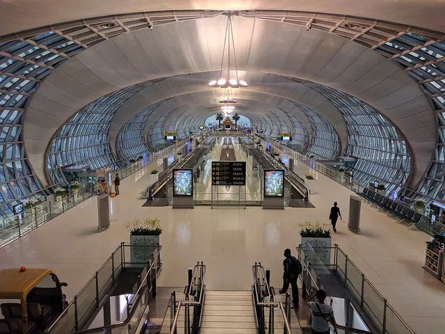
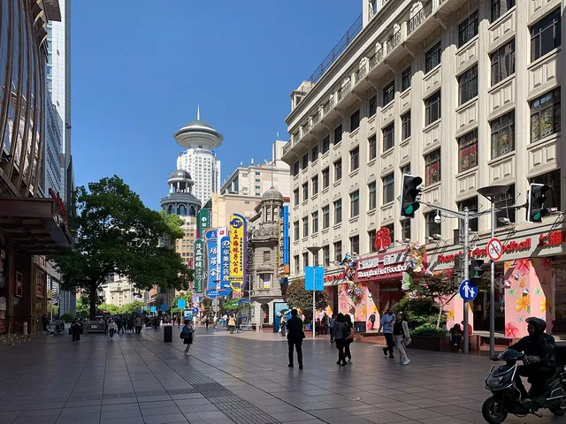
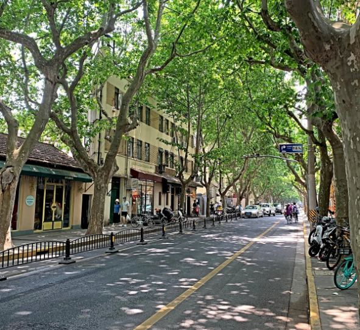
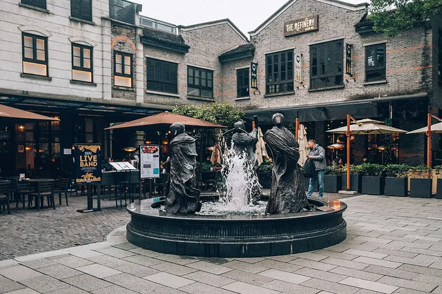
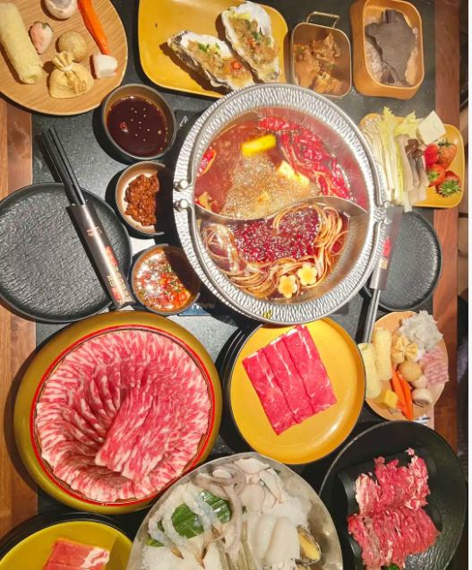
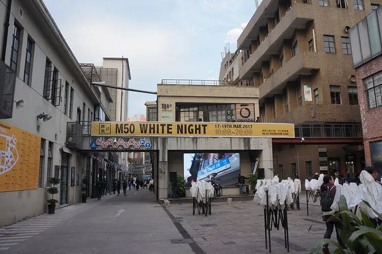
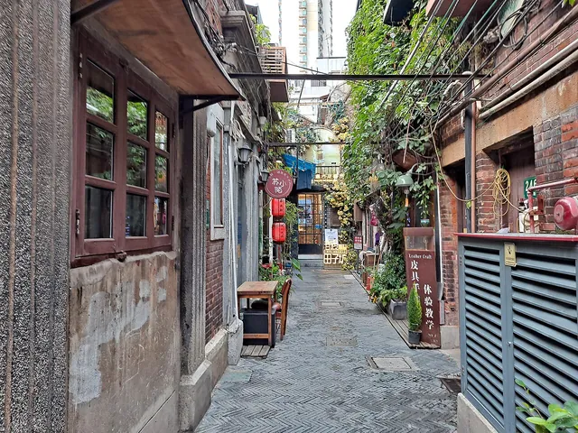

เซี่ยงไฮ้ 8 วัน 7 คืน
5–12 ธ.ค. 2026 · ไฟคริสต์มาส The Bund · Disneyland
🌤️ อากาศเซี่ยงไฮ้
ค่าเฉลี่ยช่วงเดือนธันวาคม🗓️ แผนรายวัน
เดินทางไปเซี่ยงไฮ้
เสาร์ 5 ธ.ค. · 🌙 ~8°C กลางคืน

ภาพ: Grendelkhan · CC BY-SA 3.0เช็คอินสนามบินสุวรรณภูมิ
เผื่อเวลา 3 ชม. ก่อนบิน · ชั่งกระเป๋าถือไม่เกิน 10 กก. · Spring Airlines เป็นโลว์คอสต์ ไม่มีอาหารฟรีบนเครื่อง
บิน BKK → PVG · 9C7284
บินประมาณ 4 ชม. 20 น. · เวลาจีนเร็วกว่าไทย 1 ชม.
ถึงสนามบินผู่ตง อาคาร 2
ผ่าน ตม. รับกระเป๋า แล้วเรียก Didi หรือต่อคิวแท็กซี่ · ยื่นการ์ดที่อยู่ภาษาจีนให้คนขับดูได้เลย
เช็คอิน Atour X Hotel ที่พัก
ชั้น 1 และ 6–11 อาคาร Yunhai, 1329 Huaihai Middle Road เขต Xuhui · เดิน ~160 ม. ถึง MRT Changshu Road (สาย 1, 7) · โทร +86 150 0212 8856, +86 21 3356 1052
เที่ยวเบา ๆ + The Bund
อาทิตย์ 6 ธ.ค. · ⛅ 5–10°C
ออกจากที่พัก ไป People's Square
รถไฟฟ้าสาย 1 จาก Changshu Road ไป People's Square ~15 นาที หรือเรียก Didi
Lai Lai Xiao Long Bao (莱莱小笼) มื้อกลางวัน
เสี่ยวหลงเปาไข่ปู Michelin Bib Gourmand · 506 Tianjin Road ใกล้ People's Square · วันอาทิตย์คิวยาว มาก่อนเที่ยงดีกว่า · ถ้าสาขานี้ปิด มีสาขา Jing'an ที่ 1726 Beijing West Road ใกล้ที่พัก (เปิด 8:00–14:00, 15:00–20:00)

ภาพ: Chainwit. · CC BY 4.0Nanjing Road Pedestrian Street
ถนนช้อปปิ้งหลัก ไฟคริสต์มาสตามห้าง · เดินต่อไป The Bund ได้เลย
ภาพ: Lloyd Tudor · CC BY-SA 4.0 The Bund ชมวิวแม่น้ำหวงผู่
ตึกฝั่ง Lujiazui เปิดไฟยามค่ำ ธันวาคมมีไฟประดับสวยเป็นพิเศษ · ฟรี · คืนวันอาทิตย์คนแน่น ระวังกระเป๋า
Wukang Road + Lujiazui
จันทร์ 7 ธ.ค. · ☁️ 4–8°C
ภาพ: N509FZ · CC BY-SA 4.0 เดินเล่น Wukang Road
ตึก Wukang Mansion (武康大楼) ตึกยุโรปเก่า ถนนต้นไม้ร่มรื่น คาเฟ่ถ่ายรูปสวย
Superbrand Mall (正大广场)
ห้างใหญ่ฝั่ง Lujiazui ข้ามฝั่งด้วยรถไฟฟ้าสาย 2 ลงสถานี Lujiazui · ตอนค่ำออกมาดูวิว The Bund จากฝั่ง Pudong ได้

เดินถนน Huaihai Road แถวที่พัก
ถนนช้อปปิ้งหน้าที่พัก ไฟประดับสวยตอนค่ำ · ไม่ไปก็ได้ถ้าเหนื่อย
เมืองเก่า + Yu Garden
อังคาร 8 ธ.ค. · 🌥️ 4–9°C

ภาพ: Leynadmar · CC BY-SA 4.0Xintiandi (新天地)
ตรอกอิฐแดงสไตล์ Shikumen ผสมจีน-ยุโรป · คาเฟ่ ร้านบูติก
ภาพ: Chainwit. · CC BY 4.0 Yu Garden (豫园) เข้าชมในสวน
สวนจีนโบราณกว่า 400 ปี · เปิด 8:45–16:45 ปิดวันจันทร์ ต้องเข้าก่อนบ่าย 4 · ซื้อตั๋วหน้างานหรือในแอป
ภาพ: Chainwit. · CC BY 4.0 Yuyuan Bazaar + City God Temple (城隍庙)
ร้านค้าและแผงขนมรอบสวน เปิดไฟสวยตอนค่ำ · ซื้อของฝาก

New Sukiyaki (牛New寿喜烧) ใกล้ Yu Garden มื้อเย็น
บุฟเฟต์สุกี้ยากี้ญี่ปุ่นชื่อดัง · เนื้อหลายเกรด ซีฟู้ด น้ำซุปหลายแบบ · เริ่ม ~149 หยวน
Shanghai Disneyland DISNEY DAY
พุธ 9 ธ.ค. · ☀️ 3–9°C
ภาพ: Phlizz · CC BY-SA 4.0 ออกจากที่พัก ไป Disney
เรียก Didi ~45–60 นาที (~¥100–150) หรือรถไฟฟ้าต่อสาย 11 ไปสถานี Disney Resort ~1 ชม. · สวนเปิดประมาณ 08:30 เช็กเวลาในแอป Shanghai Disney Resort
ภาพ: Jeremy Thompson · CC BY 2.0 Enchanted Storybook Castle
ปราสาทใหญ่ที่สุดในบรรดาดิสนีย์แลนด์ทั่วโลก ถ่ายรูปก่อนคนเยอะ
Zootopia + Tomorrowland
Zootopia: Hot Pursuit และ TRON คิวยาว · ซื้อ Premier Access ในแอปหลังเข้าสวน ~¥140–180 ต่อเครื่องเล่น
ภาพ: Phlizz · CC BY-SA 4.0 Treasure Cove
โซนโจรสลัด Pirates of the Caribbean: Battle for the Sunken Treasure
มื้อเย็นในสวน มื้อเย็น
กินก่อนไปหาที่ดูโชว์ หน้าปราสาทคนเริ่มแน่นตั้งแต่ 20:00
Illuminate! + พลุ Magic All Around
โชว์แสงสีฉายบนปราสาท 21:15 ต่อด้วยพลุฉลองครบ 10 ปี 21:30 · วันธรรมดามีรอบเดียว · ที่ดูแบบจองต้องซื้อ Premier Access ¥299
กลับที่พัก
รถไฟฟ้าสาย 11 เที่ยวสุดท้ายออกจากสถานี Disney Resort ประมาณ 22:30 · Didi หลัง 22:00 ราคาขึ้น 2–3 เท่า (~¥300)
Zhujiajiao เมืองน้ำโบราณ
พฤหัส 10 ธ.ค. · ⛅ 4–10°C
ออกจากที่พัก ไป Zhujiajiao
Didi ~1 ชม. หรือรถไฟฟ้าสาย 17 ลงสถานี Zhujiajiao
ภาพ: BrokenSphere · CC BY-SA 3.0 เดินเล่นเมืองน้ำ Zhujiajiao (朱家角)
คลอง สะพานหิน Fangsheng Bridge (放生桥) บ้านเรือนโบราณ · นั่งเรือชมคลอง · วันธรรมดาคนน้อยกว่าเสาร์-อาทิตย์
มื้อกลางวันในเมืองน้ำ มื้อกลางวัน
ร้านริมคลองมีเยอะ ลองบ๊ะจ่าง (粽子) ของขึ้นชื่อ
กลับเข้าเมือง พักผ่อน
แวะพักที่ที่พักก่อนออกไปกินมื้อเย็น
มื้อเย็นแถวที่พัก มื้อเย็น
ร้านแถว Huaihai Road เดินจากที่พักได้
วัดพระหยก + M50 + Tianzifang
ศุกร์ 11 ธ.ค. · 🌤️ 5–11°C

ภาพ: MNXANL · CC BY-SA 4.0M50 Art District (M50创意园)
แกลเลอรีส่วนใหญ่เปิด 11:00–17:00 ปิดวันจันทร์

ภาพ: 钉钉 · CC BY-SA 4.0Tianzifang (田子坊) เก็บของฝาก
ตรอกซอกซอยร้านเล็ก ๆ ของฝาก คาเฟ่ · ใกล้ที่พัก
Long Time Ago Mutton Shashlik (很久以前羊肉串) มื้อเย็น
ร้านปิ้งย่างเนื้อแกะชื่อดัง สาขา Guangyin Square (光音广场店) · ย้ายมาจากวัน Disney เพราะโชว์จบดึก
เก็บกระเป๋า
ชั่งกระเป๋า โหลดไม่เกิน 20 กก. ถือขึ้นไม่เกิน 10 กก.
เดินทางกลับ
เสาร์ 12 ธ.ค. · 🌤️ 5–11°C
เช็คเอาท์ Atour X Hotel
ต้องเช็คเอาท์ก่อน 12:00 · ฝากกระเป๋าที่ล็อบบี้ได้ถ้าจะออกไปเดินเล่นก่อน
มื้อสายแถว Huaihai Road
กินใกล้ที่พัก ไม่ควรไปไกล
ไปสนามบินผู่ตง อาคาร 2
Didi หรือแท็กซี่ ~1 ชม. · ถึงก่อนบิน 2–3 ชม.
บิน PVG → BKK · 9C7289
บินประมาณ 4 ชม. 45 น. ถึงสุวรรณภูมิ 20:45 (เวลาไทย)
✈️ ตั๋วเครื่องบิน Spring Airlines
กระเป๋า เวลาออกจากที่พัก และวิธีเช็กไฟลท์
- 🧳 กระเป๋า (ต่อคน ทั้งไปและกลับ)ถือขึ้นเครื่อง 1 ชิ้น ไม่เกิน 10 กก. ขนาดไม่เกิน 55×40×20 ซม. · โหลดรวม 20 กก. ขนาดแต่ละชิ้นไม่เกิน 100×60×40 ซม. · Spring Airlines ชั่งกระเป๋าถือค่อนข้างเข้ม และไม่มีอาหารฟรีบนเครื่อง
- ⏰ ขากลับออกจากที่พักไปสนามบินประมาณ 13:00 (นั่งรถ ~1 ชม.) ให้ถึงก่อนบิน 2–3 ชม.
- 📱 เช็กไฟลท์บน iPhoneเปิดแอป Notes หรือ iMessage พิมพ์ Fly 9C7284 หรือ Fly 9C7289 แล้วกดค้างที่รหัสที่มีเส้นใต้ เลือก Preview Flight
💰 งบประมาณต่อคน
- ตั๋วเครื่องบิน Spring Airlines ไป-กลับ13,330 ฿
- ที่พัก 7 คืน Atour X Hotel6,565 ฿
- ค่าอาหาร5,000 ฿
- ตั๋ว Disney + คูปอง 30 หยวน2,208 ฿
- ค่าเดินทางในเมือง1,000 ฿
- ค่าเดินทางไป-กลับสนามบิน800 ฿
- e-SIM632 ฿
- ประกันการเดินทาง325 ฿
💱 แปลงเงินหยวน → บาท
🎒 สิ่งที่ต้องเตรียม
0/16🆘 ช่วยเหลือในจีน
淮海中路1329号
亚朵X酒店
2号航站楼
ประโยคที่ใช้บ่อย กดเพื่อฟังเสียง
เบอร์ฉุกเฉิน แตะเพื่อโทร
แนะนำแคปหน้านี้เก็บไว้ เผื่อไม่มีเน็ต
เคล็ดลับเที่ยวเซี่ยงไฮ้ 2026
วีซ่า
พาสปอร์ตไทยเข้าจีนแบบ Free Visa อยู่ได้สูงสุด 30 วัน (ไม่เกิน 90 วันใน 180 วัน) · ตั้งแต่ 1 มี.ค. 2026 ไทย-จีนยกเว้นวีซ่าให้กันแบบสองทาง มีผลถึง 31 ธ.ค. 2026 ครอบคลุมทริปนี้
แผนที่ในจีน
Google Maps ใช้ไม่ได้ถ้าไม่เปิด VPN · ลิงก์ในเว็บนี้ใช้ Apple Maps (ใช้ได้ในจีน) และ Amap 高德 ซึ่งคนท้องถิ่นใช้กัน
จ่ายเงิน
โหลด Alipay / WeChat Pay ผูกบัตรต่างชาติไว้ล่วงหน้า ร้านส่วนใหญ่ไม่รับเงินสด
รถไฟฟ้า
ใช้ QR ในแอป Alipay หรือ Shanghai Public Transportation Card ครอบคลุมเกือบทุกจุดเที่ยว
อินเทอร์เน็ต
Google / Facebook / LINE ใช้ไม่ได้ในจีน โหลด VPN หรือใช้ WeChat แทนก่อนเดินทาง
อากาศ
หนาว 4–11°C ใส่เสื้อแบบหลายชั้น เพราะในห้างและร้านเปิดฮีตเตอร์ร้อน
Disneyland ครบ 10 ปี
ปีนี้มีแคมเปญ "With You, It's Magic+" โชว์หน้าปราสาทใหม่และขบวนพาเหรดพิเศษ · ซื้อตั๋วล่วงหน้าในเว็บหรือแอปทางการ
คริสต์มาส
ธันวาคมมีไฟประดับตามห้างและ The Bund สวยเป็นพิเศษ